Operating Documentation
Direction 5133330-3, Rev# 14
Signa EXCITE HD 3.0T Service Methods
Module Version 2.0, Version Date 3/7/08
Operating Documentation |
| Required Persons | Preliminary Reqs | Procedure | Finalization |
|---|---|---|---|
| 2 | 10 mins | 60 mins | 10 mins |
This document describes how to identify the defective FRU part if one of the following situation occurs.
When the patient voice cannot hear from SCIM speaker. (See 4.1 for detail) Block Diagram and Flowchart, Step 1
When the operator voice cannot hear from speaker at front magnet cover. (See 4.2 for detail) Block Diagram and Flowchart, Step 1
| Item | Qty | Effectivity | Part# | Manufacturer | |
|---|---|---|---|---|---|
| Oscilloscope | 1 | - | - | - | |
| Digital Volt Meter | 1 | - | - | - | |
| Standard Service Tool | 1 | - | - | - | |
The following illustration is a Block Diagram for troubleshooting.
Illustration 1: Block Diagram for troubleshooting
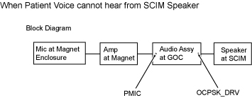
The following illustration is a Troubleshooting flowchart.
Illustration 2: Troubleshooting flowchart
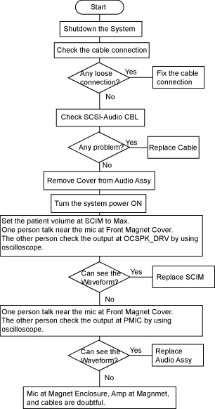
The following illustration shows each test point on the Audio Box.
Illustration 3: test point
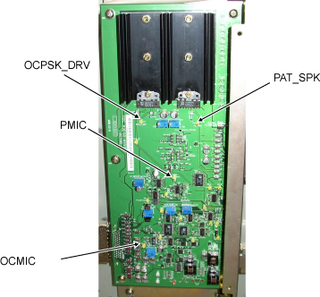
Shutdown the system power and perform LOTO.
Remove the 3 securing screws from the rear of the right side GOC cover. Slide the cover to the rear and remove.
Illustration 4: Screws to Remove

Check the cable connection to confirm there is no loose connection. If there is loose connection, fix the connection. Then, check the Audio Function.If there is no loose connection, go to next step.
Check the connectivity of SCIM-Audio CBL. PIN#3~#4, #8~#13, and #15~#18 are related to audio function. Refer to the following illustration.
Illustration 5: PIN assignment
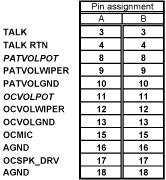
If there is any problem with connectivity replace the SCIM-Audio CBL. Then, check the Audio Function. If there is no problem with connectivity, go to next step
Remove the Audio Cover.
Remove SCIM-Audio CBL. Then, remove two screws at the bottom. Loosen two screws at the top. After that, remove two screws at the right side.
Illustration 6: Cover Removal 1
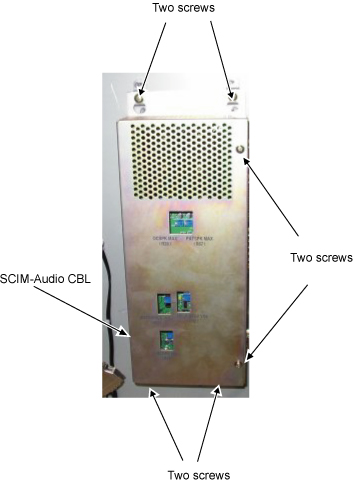
Remove two screws at the J6 connector.
Illustration 7: Cover Removal 2
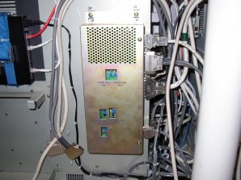
Remove two screws at the rear side of Audio Box.
Illustration 8: Cover Removal 3
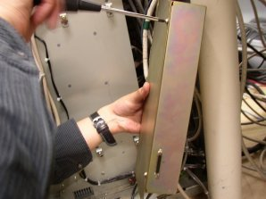
Slide the cover.
Illustration 9: Cover Removal 4
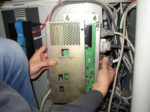
Connect SCIM-Audio CBL to J6. Check all cables are connected firmly.
Illustration 10: Cover Removal 5
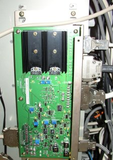
Turn the system Power ON.
Turn the patient volume at SCIM to Max.
Illustration 11: Volume on SCIM

Connect oscilloscope ground line at chassis. Set the oscilloscope measurement line at the OCSPK_DRV test point. The output voltage is supposed to be 10~20Vp-p. Adjust the oscilloscope range.
Illustration 12: test point
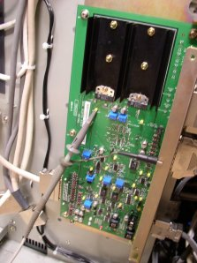
One person talk near the Mic at front Magnet cover.The other person see the oscilloscope and check that voice waveform can be seen.
Illustration 13: waveform
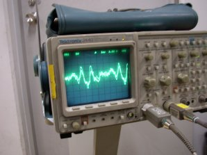
If the wave form can be seen. Audio Box and prior signal line do not have any problem. Replace SCIM.If the wave form cannot be seen, go to the next step.
Connect oscilloscope ground line at chassis. Set the oscilloscope measurement line at the PMIC test point. The output voltage is supposed to be 1~2Vp-p. Adjust the oscilloscope range.
Illustration 14: test point
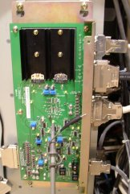
One person talk near the Mic at front Magnet cover.The other person see the oscilloscope and check that voice waveform can be seen.
Illustration 15: wave form
If the wave form can be seen. Audio Box have a problem. Replace Audio Box.If the wave form cannot be seen, Mic at Magnet Enclosure, Amp at Magnet, and cables prior to Audio Box are doubtful.
The following illustration is a Block Diagram for troubleshooting.
Illustration 16: Block Diagram for troubleshooting
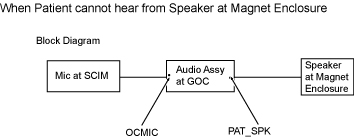
The following illustration is a Troubleshooting flowchart.
Illustration 17: Troubleshooting flowchart
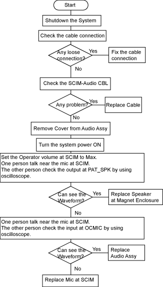
The following illustration shows each test point on the Audio Box.
Illustration 18: test point
Shutdown the system power and perform LOTO.
Remove the 3 securing screws from the rear of the right side GOC cover. Slide the cover to the rear and remove.
Illustration 19: Screws to Remove
Check the cable connection to confirm there is no loose connection. If there is loose connection, fix the connection. Then, check the Audio Function.If there is no loose connection, go to next step.
Check the connectivity of SCIM-Audio CBL. PIN#3~#4, #8~#13, and #15~#18 are related to audio function. Refer to the following illustration.
Illustration 20:
If there is any problem with connectivity replace the SCIM-Audio CBL. Then, check the Audio Function. If there is no problem with connectivity, go to next step
Remove the Audio Cover.
Remove SCIM-Audio CBL. Then, remove two screws at the bottom. Loosen two screws at the top. After that, remove two screws at the right side.
Illustration 21: Cover Removal 1
Remove two screws at the J6 connector.
Illustration 22: Cover Removal 2
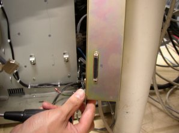
Remove two screws at the rear side of Audio Box.
Illustration 23: Cover Removal 3
Slide the cover.
Illustration 24: Cover Removal 4
Connect SCIM-Audio CBL to J6. Check all cables are connected firmly.
Illustration 25: Cover Removal 5
Turn the system Power ON.
Turn the Operator volume at SCIM to Max.
Illustration 26: Volume on SCIM
Connect oscilloscope ground line at chassis. Set the oscilloscope measurement line at the PAT_SPK test point. The output voltage is supposed to be 10~20Vp-p. Adjust the oscilloscope range.
Illustration 27: test point
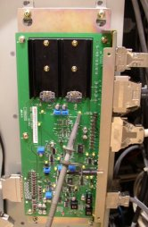
One person talk near the Mic at front SCIM. (Press the button at SCIM while talking to the mic.)The other person see the oscilloscope and check that voice waveform can be seen.
Illustration 28: waveform
If the wave form can be seen. Audio Box and prior signal line do not have any problem. Replace speaker at Magnet Enclosure.If the wave form cannot be seen, go to the next step.
Connect oscilloscope ground line at chassis. Set the oscilloscope measurement line at the OCMIC test point. The output voltage is supposed to be 100~200 mVp-p. Adjust the oscilloscope range.
Illustration 29: test point
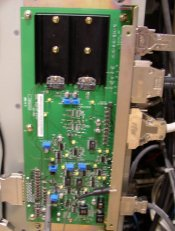
One person talk near the Mic at SCIM. (Press the button at SCIM while talking to the mic.)The other person see the oscilloscope and check that voice waveform can be seen.
Illustration 30: wave form
If the wave form can be seen. Audio Box have a problem. Replace Audio Box.If the wave form cannot be seen, Replace SCIM.
Perform Intercom Adjustment for Audio Box
Restore GOC Audio Box Cover. Be sure that the module is completely sealed.
Restore GOC cover.
Perform a head and body scan to ensure system functionality.